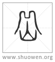

𡵹
古文象高形。
清代 段玉裁《說文解字注》
- 東岱、
見下。
- 南靃、
南靃者、衡山也。在今湖南衡州府衡山縣西北。風俗通曰。衡山一名霍山。爾雅釋山曰。霍山爲南嶽。尙書大傳、白虎通皆舉霍山。毛傳則曰。南嶽、衡。許宗毛者也。曰南霍、正皆謂今湖南之衡山。卽漢地理志長沙國湘南縣東南之禹貢衡山也。封禪書。漢武帝元封四年。巡南郡。至江陵而東。登禮灊之天柱山。號曰南嶽。此郭景純所謂武帝以衡山遼曠。移其神於天柱者。葢自是天柱始有霍山之名。而衡山不曰霍山矣。許言霍者、從其朔偁也。天柱山者、今安徽六安州霍山縣南之霍山是也。
- 西𡼙、
見下。
- 北恒、
爾雅曰。恒山爲北嶽。毛傳曰。北嶽恒。禹貢職方之恒山也。在今直隷省定州曲陽縣。
- 中大室。
大各本作泰。今正。古書大字、俗或讀他葢切。改爲太。又改爲泰。葢不可盡正矣。爾雅曰。嵩高爲中嶽。封禪書、郊祀志皆曰。中嶽、嵩高也。按禹貢曰外方。左傳曰大室。國語曰崇山。崇之字亦作崈、亦作嵩。故崇山亦曰崈高山、亦曰嵩高山。地理志。潁川郡崈高縣。武帝置。以奉大室山。是爲中岳。古文以崇高爲外方山也。大室、崇高錯舉。可見一山數名。卽今河南河南府登封縣北之嵩山也。
- 王者之所㠯巡狩所至。
㠯、用也。王者所用至此而巡狩也。巡狩者、巡所守也。天子適諸侯曰巡狩。按堯典。二月至于岱宗。五月至于南嶽。八月至于西嶽。十有一月至于北嶽。不言中嶽也。而封禪書、郊祀志述堯典皆云。中嶽、嵩高也。何氏注公羊則偁堯典而補其文曰。還至嵩。如初禮。應劭風俗通則曰。中嶽、嵩高也。王者所居。故不巡焉。其說乖異。
- 从山。獄聲。
五角切。三部。
- 古文。象高形。
今字作岳。古文之變。